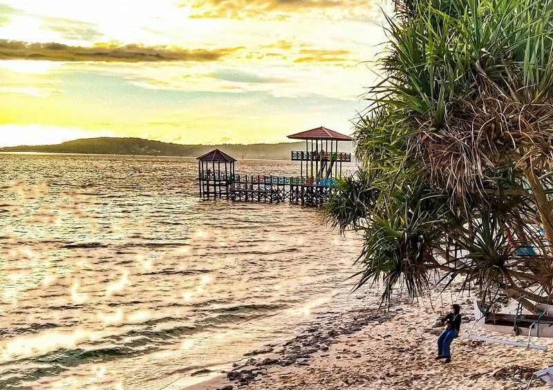

Mari menjelajah
Mengenal Pantai Dato
Salah satu destinasi wisata pesisir di Kabupaten Majene.

Majene, Sulawesi Barat
Pantai Dato
Daya tarik
Tips berkunjung: Jagalah kebersihan pantai, perhatikan kondisi cuaca,
dan ikuti aturan keselamatan yang berlaku selama berada di kawasan wisata.
← Kembali ke destinasi
Tentang website